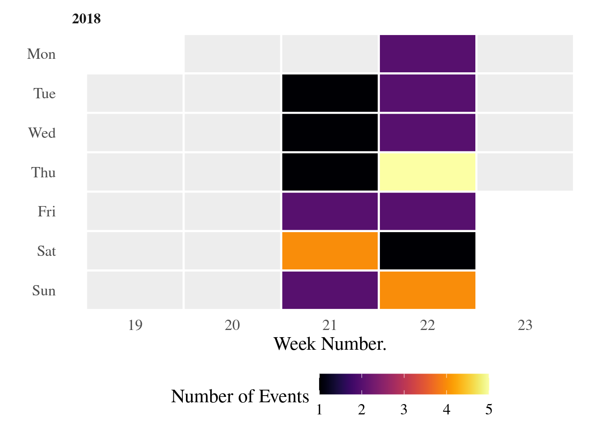

![]()
Code
library(ggplot2)
library(dplyr)
library(lubridate)
library(viridis) # Color palette
library(ggthemes) # theme tufteI like how the commit heatmap looks in Github. I wanted to play with something that could be plotted that way. I’ve seen some beautiful things done in d3 and javascript. But, of course, I wanted to make it in R. Turns out a bunch of other people have great ideas for how to go about it. Thus, I’m borrowing heavily from them1.
We will need a few packages to generate this plot.
library(ggplot2)
library(dplyr)
library(lubridate)
library(viridis) # Color palette
library(ggthemes) # theme tufteLet’s generate a data.frame for May 2018. We want the date as datetime and we also want to extract values from that date (month, year, week, …).
# choose dates
start_date <- ymd("2018-05-01")
end_date <- ymd("2018-05-31")
d <- tibble::tibble(
date = seq(start_date, end_date, by = "days"),
month = month(date),
year = format(date, "%Y"),
week = as.integer(format(date, "%W")) + 1, # Week starts at 1
day = factor(weekdays(date, T),
levels = rev(c("Mon", "Tue", "Wed", "Thu",
"Fri", "Sat", "Sun"))))This is how the data we generated looks like:
head(d)# A tibble: 6 × 5
date month year week day
<date> <dbl> <chr> <dbl> <fct>
1 2018-05-01 5 2018 19 Tue
2 2018-05-02 5 2018 19 Wed
3 2018-05-03 5 2018 19 Thu
4 2018-05-04 5 2018 19 Fri
5 2018-05-05 5 2018 19 Sat
6 2018-05-06 5 2018 19 Sun Now, let’s assume I registered some events in my life and that my data looks something like: A date column date, and the number of events that happened on a particular date (n).
Again, here’s how the data looks like.
df# A tibble: 13 × 2
date n
<date> <int>
1 2018-05-15 1
2 2018-05-16 1
3 2018-05-17 1
4 2018-05-18 2
5 2018-05-19 4
6 2018-05-20 2
7 2018-05-21 2
8 2018-05-22 2
9 2018-05-23 2
10 2018-05-24 5
11 2018-05-25 2
12 2018-05-26 1
13 2018-05-27 4I can join both data.frames and visualize!
df_plot <- d %>% left_join(df, by = "date")
df_plot %>%
mutate(n=ifelse(is.na(n), 0, n)) %>% ## Fill the NAs with zeros
ggplot(aes(date, n)) +
geom_line(lwd=0.7)+
geom_point(size=2, shape=21, fill="black", colour="white", stroke=2)+
theme_classic() +
theme(panel.background = element_rect(colour = "black"))+
ylab("Number of events")
My goal is not to analyze long term trends like seasonality. Thus, this plot is rather unremarkable. Not only because it is a small toy-like dataset, but because it fails to inform calendar information. Let’s try to make it better!
A good way of improving the procedure is to abstract things into a function we can call calendar_plot().
calendar_plot <- function(data, color.scale = "viridis",
viridis.pal = "D", dir = 1){
p <- ggplot(data, aes(x = week, y = day, fill = n)) +
geom_tile(color = "white", size = 0.8) +
facet_wrap("year", ncol = 1) +
theme_tufte() +
theme(axis.ticks = element_blank(),
legend.position = "bottom",
legend.key.width = unit(1, "cm"),
strip.text = element_text(hjust = 0.01,
face = "bold", size = 12),
text = element_text(size=16)) +
ylab("")
# Let's add more than one possible pallete. Default keeps being viridis
# Add case switch? or add 'none' for user to define their own ?
if(color.scale=="viridis"){
p <- p + scale_fill_viridis(name="Number of Events",
# Variable color palette
option = viridis.pal,
# Variable color direction
direction = dir,
na.value = "grey93",
limits = c(1, max(data$n)))
} else if(color.scale == 'greens') {
p <- p +
scale_fill_gradient(name="Number of Events",
low="lightyellow2",
high="darkgreen",
na.value = "grey93")
} else{
error("Accepted color.scale are 'viridis' and 'greens'")
}
## x axis control of labels
num_months <- length(unique(data$month))
if(num_months > 1){
p <- p + scale_x_continuous(
expand = c(0, 0),
breaks = seq(1, 52, length = 12),
labels = c("Jan", "Feb", "Mar", "Apr", "May", "Jun",
"Jul", "Aug", "Sep", "Oct", "Nov", "Dec"))
} else {
# do nothing
p <- p + xlab("Week Number.")
}
print(p)
}We can use calendar_plot() function now to make a plot in calendar-like shape. It is easier to see the data, even with such as small dataset. Below there are two color scale representations of the same data.
calendar_plot(df_plot, 'greens')
calendar_plot(df_plot, viridis.pal = "B")
I was curious about how data would look like for a longer span. Here’s the data for a longer time interval.
calendar_plot(df_plot)
By no means this is a perfect function and is far from tested. For example, when I did this update, I realized that my calendar_plot() function should handle internally the creation of the data.frame named d that serves as a placeholder. I guess that will happen in a following update :).
@online{andina2018,
author = {Andina, Matias},
title = {Github Style Calendar Heatmaps},
date = {2018-05-27},
url = {https://matiasandina.netlify.app/posts/2018-05-27-github-style-calendar-heatmap},
langid = {en}
}
I'm so glad you're here. As you know, I create a blend of fiction, non-fiction, open-source software, and generative art - all of which I provide for free.
Creating quality content takes a lot of time and effort, and your support would mean the world to me. It would empower me to continue sharing my work and keep everything accessible for everyone.
There are two easy ways to contribute. You can become a patron on Patreon or make a donation via PayPal. Every bit helps to keep the creative juices flowing.
Not in a position to contribute financially? No problem! Sharing my work with others also goes a long way. You can use the following links to share this post on your social media.
© CC-By Matias Andina, 2023 | This page is built with ❤️ and Quarto.